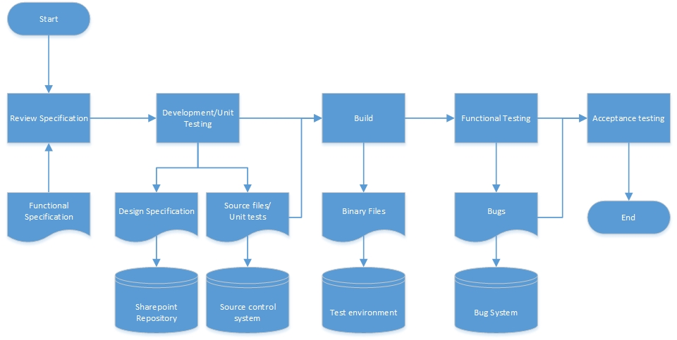

We are a company specialized in Dynamics Ax software development, following Microsoft development best practices as well as common patterns of the software development industry.
By software development, we mean that we follow the complete development lifecycle required for an state of the art software engineering process.
The diagram below shows a simplified version of the process we follow:
This process guaranties a mininum quality for any type of development, could be Dynamics Ax verticals or client implementations.
Apart from the process, we also have our people, high qualified engineers with passion in software development and quality.